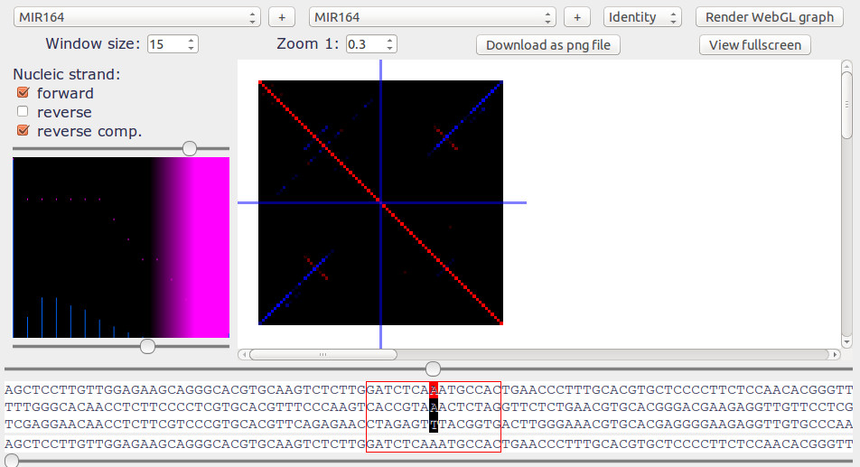

Stem-loops
Stem-loops can be seen in multiple contexts, for example in terminators. Stem-loops are also called "hairpin" and represent parts of the sequence that can possibly pair with each other forming a loop. More on stem-loops here
An exemple of stem-loop can be found in MIR164 RNA in Glycine Max (soybean) and that forms a 95bp-long hairpin with itself as you can see in the screenshot. We need to select the first and the last color channel to see the comparison of the forward sequence with itself (in red) and with its reversed complement (in blue) at the same time. The window size and the threshold needs to be adjusted to better reveal the stem-loop.
